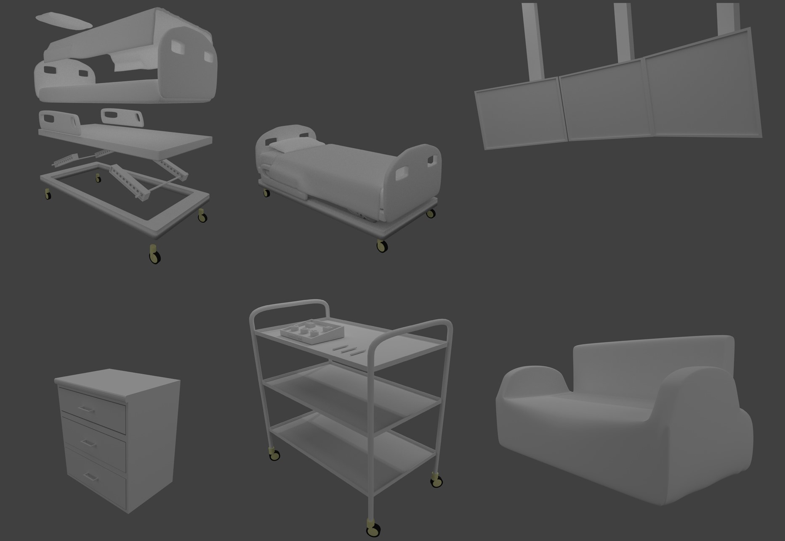

VR medical imaging in Unity
A VR application for visualising and interacting with MRI/CT scans
I've always wanted to make something in Unity. When I got my hands on the HTC Vive headset, I immediately knew that it was going to be in VR. So I decided to do this project as my BSc final year project.
The purpose of this application is to let the user interact with MRI/CT scans, which are, by nature, three dimensional. Therefore, VR is the perfect medium for this application.
Volume rendering is used to render the MRI/CT scans, which enables us to see the insides of an object.
The implementation of the interaction mechanics used the open source VR toolkit library, which provides an abstraction from the underlining OpenVR API.
Blender was used to model the 3D assets, while the materials were created in Unity.